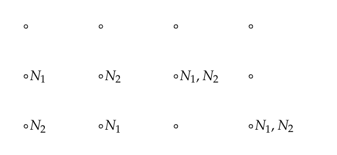

Chapter 3 - Combinatorics
3.1 Permutations
Results
Counting Technique
A task is to be carried out in $r$ stages, there are $n_k$ ways to carry out
stage $k$. The total number of ways in which the entire task can be accomplished
is given by the product $N = n_1n_2\cdots n_k$.
Definition 3.1
Let A be any finite set. A
permutation of A is a one-to-one mapping of A onto itself.
Theorem 3.1
The total number of permutations of a set A of n elements is given by
$n(n-1)(n-2)\cdots 1$.
Definition 3.2
Let A be an n-element set, and let k be an integer between 0 and n. Then a k-permutation of
A is an ordered listing of a subset of A of size k.
Theorem 3.2
The total number of k-permutations of a set A of n elements is given by
$n(n-1)(n-2)\cdots (n - k + 1)$.
Definition 3.3
Let $a_n$ and $b_n$ be two sequences of numbers. We say that $a_n$ is
asymptotically equal to $b_n$, and write $a_n\sim b_n$ if,
$$
\lim_{n\rightarrow\infty}\frac{a_n}{b_n} = 1.
$$
Theorem 3.3 (Stirling's Formula)
The sequence n! is asymptotically equal to
$$
n^n e^{-n}\sqrt{2\pi n}.
$$
Definition 3.4
Let $\sigma$ be a permutation of set $\{1, 2,\ldots, n\}$. Then $i$ is a
record of $\sigma$ if either $i = 1$ or $\sigma(j) < \sigma(i)$ for every
$j = 1,\ldots, i-1$.
Exercise 1
Four people are to be arranged in a row to have their picture taken. In how
many ways can this be done?
Answer
The first position can be filled by 4 people, the next by 3 and so on.
There are 4! = 4·3·2·1 = 24 possibilities.
■
Exercise 2
An automobile manufacturer has four colors available for automobile exteriors
and three for interiors. How many different color combinations can he produce?
Answer
Using the counting technique, there are a total of 4·3 = 12 color combinations.
■
Exercise 3
In a digital computer, a bit is one of the integers {0,1}, and a word is any
string of 32 bits. How many different words are possible?
Answer
There are 2·2·2·...·2 a total of 32 times, or 2
32 = 4294967296. So, quite a few!
■
Exercise 4
What is the probability that at least 2 of the presidents of the United States
have died on the same day of the year? If you bet this has happened, would
you win your bet?
Answer
As this is written, there have been a total of 46 presidents. This is the same exact problem as the
shared birthday problem, when we assume that all days are equally likely and we disregard leap years.
The calculation:
> 1 - prod(365:(365 - 46 + 1))/365**46
[1] 0.9482528
so there is a very high probability that at least two presidents have a shared death date.
This has actually happened, the second and third presidents, John Adams and Thomas Jefferson
both died on the same day - actually on the 4th of July!
■
Exercise 5
There are three different routes connecting city A to city B. How many ways
can a round trip be made from A to B and back? How many ways if it is
desired to take a different route on the way back?
Answer
There are 3 routes from A to B, and then 3 routes from B to A, so there are
3·3 = 9 possible round trips. If the way back must be different, it becomes 3·2 = 6 possible trips.
■
Exercise 6
In arranging people around a circular table, we take into account their seats
relative to each other, not the actual position of any one person. Show that
n people can be arranged around a circular table in (n − 1)! ways.
Answer
Fix the seat of the first person, any other seat chosen can be 'rotated' back to this position since
we only care about the relative positions. This is a disguised counting problem, on the first seat to the
left there are n-1 possible choices, on the net seat n-2 etc. all the way until the last seat, which is
the seat to the right of the first person. There are clearly (n-1)·(n-2)·...·1 = (n-1! possible seatings.
■
Exercise 7
Five people get on an elevator that stops at five floors. Assuming that each
has an equal probability of going to any one floor, find the probability that
they all get off at different floors.
Answer
Consider first the case where there are two people in the elevator and there are two floors.
We can make a tree and map out four possible outcomes, each with a probability of 1/4. There are
two ways for the passengers to get off on the same floor, so the probability is 2·(1/2
2) = 1/2.
If there are 3 people in the elevator with 3 floors, we get a tree with 27 final outcomes, each
with 1/27. Now there are 3 ways that the passengers can exit on the same floor, so the
probability becomes 3·(1/3
3) = 1/3
2 = 1/9.
We can see the pattern, so for 5 people, we get 5·(1/5
5) = 1/5
4 = 1/625.
However - that's not what the question was. We want to find the probability of the passengers
getting off at DIFFERENT floors.
We have established that we get a total of 1/5
5 possible outcomes, so we just have to count the
possible ways they can exit the the elevator. There are 5 ways for one of them to exit the first floor,
4 ways for them to leave the second floor, etc. So there are a total of 5! unique ways of exiting the
the elevator, out of a total of 1/5
5 possible ways.
The probability they all get off on different floors is therefore 5!/5
5.
■
Exercise 8
A finite set $\Omega$ has $n$ elements. Show that if we count the empty set and $\Omega$
as subsets, there are 2
n subsets of $\Omega$.
Answer
We can represent each possible subset as a binary number. So
000...0 is the empty set.
111...1 is the full set.
011...0 is some subset.
Each element has 2 possibilities, so we get 2·2·2·...·2 n times, or 2
n total possibilities.
■
Exercise 9
A more refined inequality for approximating n! is given by
$$
\sqrt{2\pi}\left(\frac{n}{e}\right)^2 e^{1/(12n + 1)} < n! < \sqrt{2\pi}\left(\frac{n}{e}\right)^2 e^{1/(12n)}
$$
Write a computer program to illustrate this inequality for n = 1 to 9.
Answer
Code:
lowEst <- function(n) {
return(sqrt(2*pi*n)*(n/exp(1))**n*exp(1/(12*n + 1)))
}
highEst <- function(n) {
return(sqrt(2*pi*n)*(n/exp(1))**n*exp(1/(12*n)))
}
printVals <- function() {
cat(sprintf("%3s", "n"))
cat(sprintf("%12s", "LOW"))
cat(sprintf("%12s", "FAC"))
cat(sprintf("%12s", "HIGH\n"))
cat("-----------------------------------------\n")
for(n in 1:9) {
cat(sprintf("%3d",n))
cat(sprintf("%12.2f", lowEst(n)))
cat(sprintf("%12d", factorial(n)))
cat(sprintf("%12.2f\n", highEst(n)))
}
}
printVals()
Output:
n LOW FAC HIGH
-----------------------------------------
1 1.00 1 1.00
2 2.00 2 2.00
3 6.00 6 6.00
4 23.99 24 24.00
5 119.97 120 120.00
6 719.87 720 720.01
7 5039.33 5040 5040.04
8 40315.89 40320 40320.22
9 362850.55 362880 362881.38
■
■
Exercise 10
A deck of ordinary cards is shuffled and 13 cards are dealt. What is the
probability that the last card dealt is an ace?
Answer
Simplified cases: if we simply draw an ace from one card: 4/52 = 0.07692308.
Let us draw two cards. The value of the first card isn't irrelevant,
because if it is an ace, it will affect the probability of drawing an ace on the second draw.
There are two possibilities:
Draw two aces: 4/52·3/51 and drawing one ace: 48/52·4/51. When adding them, we get
0.004524887 + 0.07239819 = 0.07692308.
Similarly when drawing three cards.
4/52·3/51·2/50 + 4/52·48/51·3/50 + 48/52·4/51·3/50 + 48/52·47/51·4/50 = 0.07692308
The probability doesn't change even if we change the number of cards. The reason is that
it doesn't matter what draw we use, since it is equally likely to be an ace as any of the other
cads - so the probability is simply 4/52 = 1/13.
■
Exercise 11
There are n applicants for the director of computing. The applicants are interviewed
independently by each member of the three-person search committee
and ranked from 1 to n. A candidate will be hired if he or she is ranked first
by at least two of the three interviewers. Find the probability that a candidate
will be accepted if the members of the committee really have no ability at all
to judge the candidates and just rank the candidates randomly. In particular,
compare this probability for the case of three candidates and the case of ten
candidates.
Answer
Assume first there are two interviewers and three candidates. If the first interviewer selects candidate 1,
then there is a 1/3 probability that the second interviewer will do the same.
Increase to three interviewers and three candidates. If the first interviewer selects candidate 1,
then there are three possible ways of selecting a candidate. Interviewer 2 selects 1, Interviewer 3
selects another. The reverse situation. All interviewers select candidate 1. And finally, the two other
candidates select the same candidate. All cases must be taken into account.
So in the general case. The first interviewer selects some candidate.
There are four cases that must be considered for selecting a candidate,
an event which we call S:
Interviewer 2 selects the same candidate, interviewer 3 selects another.
Interviewer 3 selects the same and interviewer 2 selects another.
Both the other interviewers select the same candidate as interviewer 1.
The two other candidates select the same - other - candidate, which can happen in n-1 ways.
So the probability P(S) becomes:
$$
P(S) =
\frac{1}{n}\cdot\frac{n-1}{n} + \frac{n-1}{n}\cdot\frac{1}{n} + \frac{1}{n}\cdot\frac{1}{n} + (n-1)\frac{1}{n^2}
=
\frac{n-1}{n^2} + \frac{n-1}{n^2} + \frac{1}{n^2} + \frac{n-1}{n^2}
=
\frac{3n-2}{n^2}
$$
Alternatively, the complement event is that all interviewers select different candidates.
\begin{align}
P(S) &= 1 - P(S^c) \\
&= 1 - (1)\left(\frac{n-1}{n}\right)\left(\frac{n-2}{n}\right) \\
&= \frac{n^2}{n^2} - \frac{n^2 - 3n + 2}{n^2} \\
&= \frac{n^2 - n^2 + 3n - 2}{n^2} \\
&= \frac{3n - 2}{n^2}
\end{align}
This has been verified by a simulation.
If there are 3 candidates, we can calculate an explicit probability:
$$
P(S) = \frac{3(3) - 2}{(3)^2} = \frac{7}{9}
$$
If there are 10 candidates:
$$
P(S) = \frac{3(10) - 2}{(10)^2} = \frac{28}{100}
$$
Code:
N = 10
candidates = 1:N
NSIMS = 10000
SAME = rep(0, NSIMS)
for(k in 1:NSIMS) {
c1 = sample(candidates, size=1)
c2 = sample(candidates, size=1)
c3 = sample(candidates, size=1)
if(c1 == c2 & c1 == c3) {
SAME[k] = 1
} else if(c1 == c2 & c1 != c3) {
SAME[k] = 1
} else if(c1 != c2 & c1 == c3) {
SAME[k] = 1
} else if(c2 == c3) {
SAME[k] = 1
}
}
mean(SAME)
(3*N - 2)/N**2
■
Exercise 12
A symphony orchestra has in its repertoire 30 Haydn symphonies, 15 modern
works, and 9 Beethoven symphonies. Its program always consists of a Haydn
symphony followed by a modern work, and then a Beethoven symphony.
(a) How many different programs can it play?
(b) How many different programs are there if the three pieces can be played
in any order?
(c) How many different three-piece programs are there if more than one
piece from the same category can be played and they can be played in
any order?
Answer
(a)
This is a standard application of the counting technique. There are 30·15·9 = 4050
different possible concerts.
(b)
We add all possible orders, which are 3·2·1 = 6 in total. So now there are 6·30·15·9 = 24 300
possible concerts.
(c)
There are a total of 54 pieces, and they will play three pieces: 54
3 = 157 464 possible concerts.
■
Exercise 13
A certain state has license plates showing three numbers and three letters.
How many different license plates are possible
(a) if the numbers must come before the letters?
(b) if there is no restriction on where the letters and numbers appear?
Answer
(a)
The numbers can be from 0-9, so 10 possible values, and the letters have 26 possible values.
The total number of possible license plates are: 10·10·10·26·26·26 = 17 576 000 possible license plates.
(b)
There are a total of 36 alphanumeric characters. Now the total number of possible values are:
36
6 = 2 176 782 336, so more than 2 billion. Should last a while.
■
Exercise 14
The door on the computer center has a lock which has five buttons numbered
from 1 to 5. The combination of numbers that opens the lock is a sequence
of five numbers and is reset every week.
(a) How many combinations are possible if every button must be used once?
(b) Assume that the lock can also have combinations that require you to
push two buttons simultaneously and then the other three one at a time.
How many more combinations does this permit?
Answer
(a)
First number has 5 possible values, then 4 etc. so this is a factorial problem. There are 5! = 720 possible
combinations.
(b)
For pressing two buttons at the same time, we get 5·4 = 20 possible values. And then we get 3 values afterwards,
which we assume can be anything. There are a total of: 20·5
3 = 2500 possible combination.
■
Exercise 15
A computing center has 3 processors that receive n jobs, with the jobs assigned
to the processors purely at random so that all of the 3
n possible assignments
are equally likely. Find the probability that exactly one processor has no jobs.
Answer
In this setup, the jobs can be queued. Simplifying the exercise to two jobs, N
1, N
2,
and start by finding the probability that all jobs go to either the second or third processor. This can be
summarized in the following image, where the processors are drawn as nodes and the jobs marked by their names.
There are four possible outcomes:

The probability that the jobs end up in the other processors is:
$$
P(C_1^c) = \left(\frac{2}{3}\right)^2 = \frac{4}{9}
$$
But we must take away the probabilities when both jobs end up in the same processor (which can happen in two ways),
since we want to find the probability that exactly one processor is empty. Denote this event as $C_1^S$.
$$
P(C_1^S) = \left(\frac{2}{3}\right)^2 - 2\left(\frac{1}{3}\right)^2 = \frac{4}{9} - \frac{2}{9} = \frac{2}{9}
$$
This can happen to all three processors, so in the simplified case, this becomes:
$$
P(C_1^S) + P(C_2^S) + P(C_3^S) = \frac{6}{9} = \frac{2}{3}
$$
Generalizing to the case with n jobs. The event where exactly one processor has no jobs is S.
$$
P(S) = 3\left[\left(\frac{2}{3}\right)^n - 2\left(\frac{1}{3}\right)^n\right]
= 3\left(\frac{2^n}{3^n} - \frac{2}{3^n}\right) = \frac{3(2^n-2)}{3^n}
$$
■
Exercise 16
Prove that at least two people in Atlanta, Georgia, have the same initials,
assuming no one has more than four initials.
Answer
The population of Atlanta is about 500 000. If we assume that all people have four initials, there
are a total of 26
4 = 456 976 possible initials. Since this is less than the population,
there must be some repetition, so some people must have the same initials.
■
Exercise 17
Find a formula for the probability that among a set of n people, at least two
have their birthdays in the same month of the year (assuming the months are
equally likely for birthdays.
Answer
In the case where n = 2, the first person can have birthday in any month, and the event that
the second person has a different birthday month, P(D
2) = 11/12. So the probability
they have the same birthday, P(S
2) = 1 - 11/12.
In the case where n = 3, it becomes.
$$
P(D_3) = \left(\frac{11}{12}\right)\left(\frac{10}{12}\right)
$$
$$
P(S_3) = 1 - \left(\frac{11}{12}\right)\left(\frac{10}{12}\right)
$$
and so on. Generalizing to the nth case, adding 12/12 = 1 and assuming n < 13:
$$
P(D_n) = \left(\frac{12}{12}\right)\left(\frac{11}{12}\right)\cdots\left(\frac{12-n+1}{12}\right) = \frac{12!}{(12-n)!}\cdot\frac{1}{12^n}
$$
$$
P(S_n) = 1 - \frac{12!}{(12-n)!12^{n}}.
$$
■
Exercise 18
Consider the problem of finding the probability of more than one coincidence
of birthdays in a group of n people. These include, for example, three people
with the same birthday, or two pairs of people with the same birthday, or
larger coincidences. Show how you could compute this probability, and write
a computer program to carry out this computation. Use your program to find
the smallest number of people for which it would be a favorable bet that there
would be more than one coincidence of birthdays.
Answer
For two peole, there are only two possible 'coincidences'. Either they share a birthday, or they don't.
For three people, p1, p2, p3, there are four coincidences:
▸ p1 and p2 share a birthday
▸ p1 and p3 share a birthday
▸ p2 and p3 share a birthday
▸ p1, p2 and p3 all share a birthday
A much easier way to account for all coincidences is to instead consider the complement of any coincidences:
the probability that all people have distinct birthdays, and then subtract this from 1. Call this event D, then:
$$
P(D_3) = \left(\frac{365}{365}\right)\left(\frac{364}{365}\right)\left(\frac{363}{365}\right)
$$
Which gives us the probability of a coincidence as:
$$
P(C_3) = 1 - P(D_3) = 1 - \left(\frac{365}{365}\right)\left(\frac{364}{365}\right)\left(\frac{363}{365}\right).
$$
Testing out this conjecture with a simulation, which indicates that the theoretical value is close to the simulated one.
Code:
N = 5
CalcProb <- function(n) {
numerator = prod(365:(365-n+1))
denominator = 365**n
return(1 - numerator/denominator)
}
NSIMS = 100000
coincidences = rep(1, NSIMS)
for(k in 1:NSIMS) {
bd = sample(1:365, size=N, replace=TRUE)
if (length(unique(bd)) == N) {
coincidences[k] = 0
}
}
mean(coincidences)
CalcProb(N)
Output:
> mean(coincidences)
[1] 0.02754
> CalcProb(N)
[1] 0.02713557
■
■
Exercise 19
Skipped - don't have all the time in the world! :-)
Exercise 20
At a mathematical conference, ten participants are randomly seated around
a circular table for meals. Using simulation, estimate the probability that no
two people sit next to each other at both lunch and dinner. Can you make an
intelligent conjecture for the case of n participants when n is large?
Answer
For n=10 the probability is around 0.92, for n=100 and n=250 it's around 0.86 showing that
it looks like it stabilizes for large n and converges to some constant. We can make a conjecture
that it converges to $C = \sqrt{3}/2 \approx 0.8660254$, but I have no argument for that except it looks like it
from the simulated values. :-)
Code:
CheckRepSeat <- function(ll, ld) {
foundRep = FALSE
for (i in 2:(length(ll)-1)) {
d = which(ld == ll[i])
nxt = d+1
prv = d-1
if (nxt > length(ll)) nxt = 1
if (prv == 0) prv = 5
if (ll[i-1] == ld[nxt]) {
foundRep = TRUE
} else if (ll[i+1] == ld[prv]) {
foundRep = TRUE
} else if (ll[i-1] == ld[prv]) {
foundRep = TRUE
} else if (ll[i+1] == ld[nxt]) {
foundRep = TRUE
}
}
return(foundRep)
}
NSIMS = 10000
NPARTICIPANTS = 100
DupeSeating = rep(0, NSIMS)
for (k in 1:NSIMS) {
stLch = sample(1:NPARTICIPANTS, size=NPARTICIPANTS)
stDin = sample(1:NPARTICIPANTS, size=NPARTICIPANTS)
if (CheckRepSeat(stLch, stDin)) {
DupeSeating[k] = 1
}
}
sum(DupeSeating)/NSIMS
l1 = c(1, 2, 3, 4, 5)
d1 = c(5, 3, 1, 4, 2)
CheckRepSeat(l1, d1)
l2 = c(1, 5, 3, 2, 4)
d2 = c(3, 4, 5, 1, 2)
CheckRepSeat(l2, d2)
Output:
> # N = 10
> sum(DupeSeating)/NSIMS
[1] 0.9179
> # N = 100
> sum(DupeSeating)/NSIMS
[1] 0.8662
> # N = 250
> sum(DupeSeating)/NSIMS
[1] 0.8687
■
Exercise 21
Skipped - code not provided.
Exercise 22
(Paraphrased). A watch maker discovers some counterfeit watches which are marked
with a stamped number. Of the 16 found watches, the highest has the value 56.
Watson says that the maximum likelihood principle says that 56 is the highest number,
but Holmes claims it is the double of that: 112 (at least).
(a) Show that Watson is correct that the Maximum Likelihood Principle
gives 56.
(b) Write a computer program to compare Holmes’s and Watson’s guessing
strategies as follows: fix a total N and choose 16 integers randomly
between 1 and N . Let m denote the largest of these. Then Watson’s
guess for N is m, while Holmes’s is 2m. See which of these is closer to
N. Repeat this experiment (with N still fixed) a hundred or more times,
and determine the proportion of times that each comes closer. Whose
seems to be the better strategy?
Answer
(a)
So we assume that the serial numbers come from a uniform distribution {1, 2, ..., N} where N is the
total number of counterfeit watches, and define X have this distribution. We have watches
k
1, ..., k
16 where the largest value is 56. By the MLE method, we want to maximize:
$$
P(X=k_1)\cdot P(X=k_2)\cdot \ldots\cdot P(X = k_{16}) = \frac{1}{N^{16}}.
$$
This probability is maximized when 1/N
16 is as small as possible. Based on the data we have,
we have some restrictions for what N can be: $k_i\leq N$ for all i. So the smallest $N$ we can find
based on all the information we have is 56, which then becomes our MLE.
(b)
After running the simulation we can see that Watson slightly understimates the true value, but
Holmes greatly overestimates it.
Code:
NSIMS = 10000
NMAX = 127
K = 16
wEst = rep(0, NSIMS)
hEst = rep(0, NSIMS)
for (k in 1:NSIMS) {
smp = sample(1:NMAX, size=16)
m = max(smp)
wEst[k] = m
hEst[k] = 2*m
}
NMAX
mean(wEst)
mean(hEst)
Output:
> NMAX
[1] 127
> mean(wEst)
[1] 120.4803
> mean(hEst)
[1] 240.9606
■
Exercise 23
(Paraphrased). Barbara is interviewing candidates for a job. There are n candidates that can be ordered relative
to each other, but not the total rank. So if there are 6 candidates and their true rank is {6, 1, 4, 2, 3, 5},
then after the first 3 cancidates the ranking is {3, 1, 2}. After each interview, the candidate must be hired, or
will be lost.
(a) What is the probability that Barbara gets the best candidate if she interviews
all of the candidates? What is it if she chooses the first candidate?
(b) Assume that Barbara decides to interview the first half of the candidates
and then continue interviewing until getting a candidate better than any
candidate seen so far. Show that she has a better than 25 percent chance
of ending up with the best candidate.
Answer
(a)
In either case it will be a completely random choice, since the candidates appear in random order. So both get
probability 1/n. (If she interviews all candidates we assume she hires the last one since this is the only
available candidate).
(b)
In all possible cases, the best candidate (candidate 1) will end up in the second group (group 2)
with a 0.5 probability, and we will restrict our attention to this case. In the cases where
candidate 1 ends up in group 2, we must find the cases where they are the first candidate that is
better than all candidates in group 1.
We have restricted our cases to when 1 is in the second group. In half of these cases, candidate 2 will
be in group 1, and when that happens, the interviews will continue until Barbara finds candidate 1. This
situation will be 1/4 of all possible cases, and in addition to these there are more cases where
candidate 1 will be selected (such as when 3 is in group 1, and candidate 1 randomly comes before 2 in group 2).
Hence the chance of getting candidate 1 is more than 1/4.
■
Exercise 24
For the task described in Exercise 23, it can be shown that the best strategy
is to pass over the first k − 1 candidates where k is the smallest integer for
which
$$
\frac{1}{k} + \frac{1}{k+1} + \ldots + \frac{1}{n-1} \leq 1.
$$
Answer
From some calculations we can see that 1/4 + ... + 1/9 = 0.9956... which is the smallest k so the sum is smaller
than 1. According to the optimal strategy we will pass over the first k-1 = 3 candidates. (Calling this K in the
program).
The simulations become roughly equal to 1/e, but even with one million simulations it is very approximate.
Apparently some slow convergence.
Code:
n = 10
K = 3
NSIMS = 1000000
bestCand = rep(0, NSIMS)
for (k in 1:NSIMS) {
cnd = sample(1:n, size=n)
bestSMP = min(cnd[1:K])
if (bestSMP > 1) {
remCAND = cnd[(K+1):n]
HIRED = remCAND[min(which(remCAND < bestSMP))]
if (HIRED == 1) {
bestCand[k] = 1
}
}
}
mean(bestCand)
1/exp(1)
Output:
> mean(bestCand)
[1] 0.398069
> 1/exp(1)
[1] 0.3678794
■